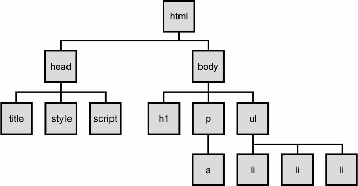
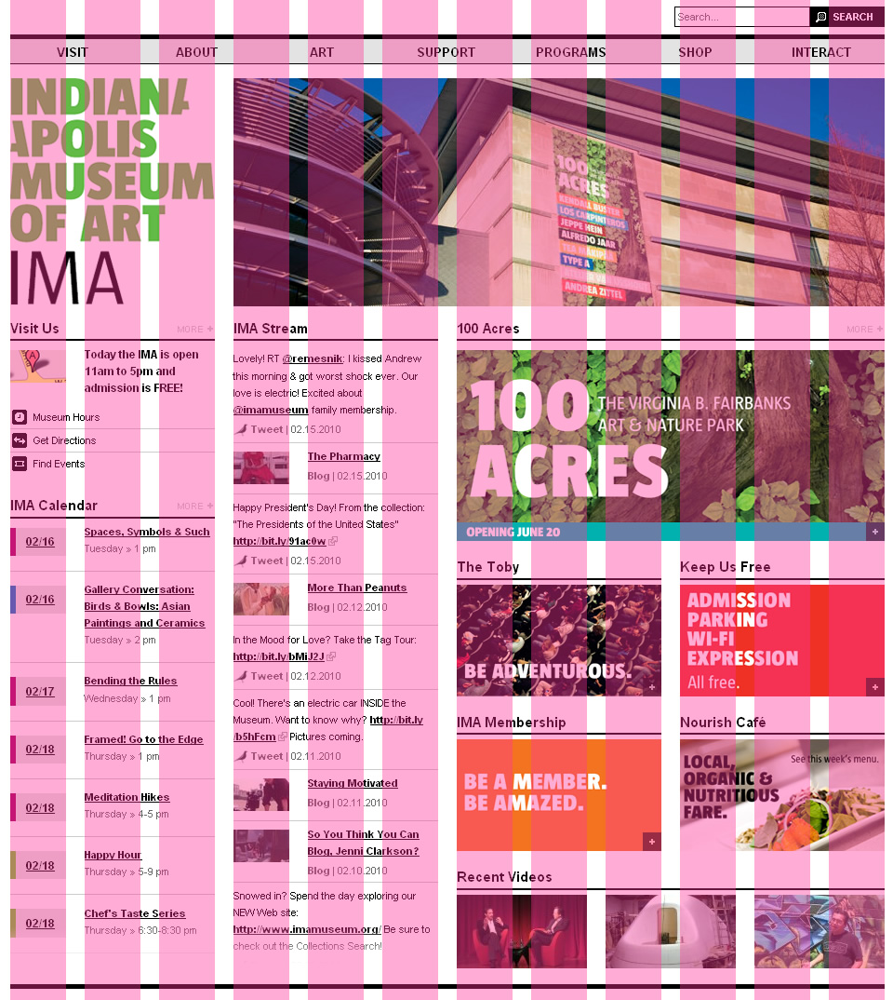

Hej!
Monday
Git & HTML
Tuesday
Jquery & Javascript
Wednesday
Python Basics
Thursday
Scraping
Friday
API
s
Startup DNA
Questions?
Git
Exercise
http://pushmatrix.github.com/git-dds
The Web
HTML
the content
CSS
the style
Javascript
the logic
Document Object Model (DOM)

Protip
HTML doesn't care about whitespace.
Beginner's
Guide to HTML & CSS
Inspecting
The grid

Twitter Bootstrap